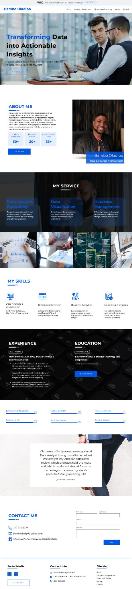

Personal brand
Bambo Oladipo
The challenge
Make expertise, services and the contact path easy to understand.
Key decisions
- Keep the person and expertise central.
- Group services around visitor intent.
- Keep contact actions visible.
The improved journey
Visitors can understand the professional story and move naturally toward contact.